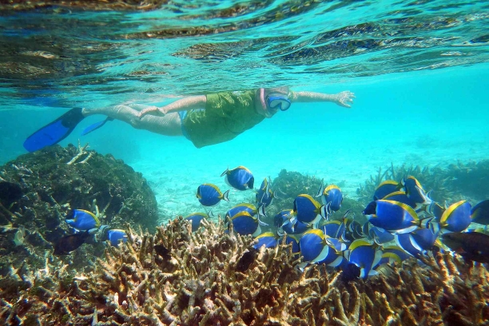
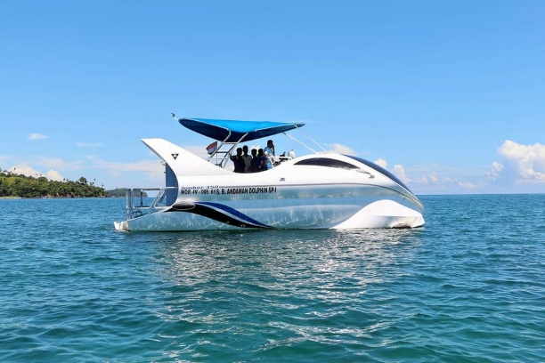
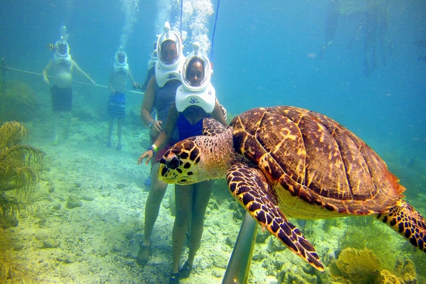
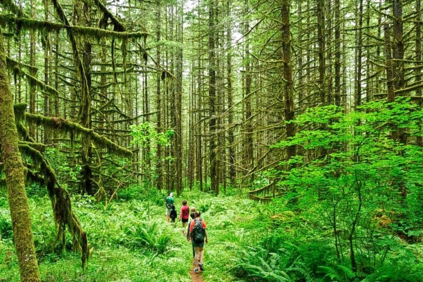
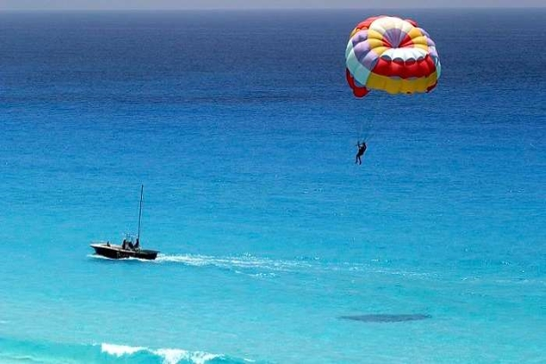

With a plethora of things to do in Andaman, one of the most famous and important activity is scuba diving. As out of 120 islands, only 36 are inhabitable, the majorities of the places in Andaman is untouched by human disturbance and offer some of the most beautiful natural scenery.
There are various vendors that offer scuba diving in Andaman. Moreover, you can even book scuba diving in Andaman online through various online platforms.
Location: Most famous scuba diving sites in Andaman include Havelock Islands, Neil Islands.
Price: The approximate price for the scuba diving in Andaman is 4500 rs.
2. Snorkeling

After scuba diving comes the easiest and one of the most beautiful things to do in Andaman, snorkelling. It is yet another amazing way to explore the beautiful marine life and corals of Bay of Bengal. From umpteen varieties of fishes to plant species, you can find everything while you snorkel in the clear waters of Andaman.
Location: Some of the most famous beaches and places in Andaman to go for snorkelling are Radhanagar Beach, Red Skin Island, Jolly Buoy Island, Neil Island, Elephant Beach and many more
Price: The approximate price for the snorkeling in Andaman is 350 Rs. per session for 30 minutes.
Andaman offer great places to visit for those who want to spend some time amidst spectacular views.
3. Andaman Dolphin Glass Bottom Boat

Most of you might have already heard about the one of a kind dolphin glass bottom boat in the Andamans. This is another most loved activity in the Andaman Islands which lets you explore the underwater marine life. And the best thing is that you will experience this everything like as if you are in the middle of the sea.
Uncover the rich coral reef and the colourful underwater marine life through this glass boat. There is a lot of boats in the Andamans which provides this exciting activity. The luxurious windows will take you through a journey of the underwater at a high speed. Make your 60 minutes the most memorable one as you enjoy this amazing glass boat ride in the Port Blair.
Location: Opposite Premier Industry, Dairy Farm Road, Port Blair - 744103, Andaman and Nicobar.
Price: The approximate price starts from Rs 3500
Book your Andaman tour from Thrillophilia and get amazing offers and deals on our best customizable packages.
4. Light & Sound Show at Cellular Jail
The historic Cellular Jail is one of the most famous places in Port Blair and stands quietly, telling the stories of the tortures all the brave freedom fighters have been through. Completed in 1906, the Cellular Jail was named so because it is built in a way that one cell can hold single prisoner only.
The Cellular Jail is now declared as the National Memorial and is a must visit place in Andaman. Visiting the Cellular Jail means delving into the history of Indian Independence. There are various paintings, which highlights the history of Cellular Jail too.
Moreover, there is also a light and sound program in Hindi and English, which narrates the complete history and scenarios of India's freedom. The timing for the shows is 6 PM and 7.15 PM
Location: Atlanta Point, Port Blair, Andaman and Nicobar Islands
Price: 30 Rs. And 50 Rs. for the evening show.
5.Sea Walking

Sea Walking is one of the newest things to do in Andamans, which is expanding in level of ubiquity. The Underwater Sea Walk is a standout amongst the most one of a kind attractions that one must experience when going to the Andaman Islands. It is a genuine once in an existence time experience for all the non-jumpers out there.
Appreciate a protected and energizing submerged stroll on the ocean bed (around 6-7m deep), and witness coordinate the sublime marine existence of Mauritius, the brilliant fauna, corals, and an extensive variety of fish, all in their regular home.
Location: Most famous sea walking sites in Andaman include Havelock Islands, Neil Islands.
Price: The approximate price for the sea walking in Andaman is 3,999 rs.
6.Island trekking

Trekking is a standout amongst the most looked for adventurous experience sport in the Andaman and Nicobar Islands. Camps are the right decision for nature-beaus who wish to appreciate the sun, ocean and nature by spending calm occasions right on the shoreline.
One can go trekking through the nature trail from Mt. Harriet to Madhuban and appreciate the uncommon woods life, verdure. There are other trekking courses too. Some of the time, trekking undertakings are just a day or two long.
Location: Havelock Island
Price: The approximate price for the trekking in Andaman is 1,300 rs.
7.Para-Sailing

If you are looking for some adventure activities in the Andamans then this will surely lit you up. Parasailing is one of the favourite water sports in the Andaman. With a mixture of water and airborne adventure, you will definitely fall in love with this sport. A designed canopy is used to drag you through the wind as you experience the whole place from a different perspective.
This activity is basically done in the calm waters. So, this time don’t miss a chance to try parasailing and experience the fun. Soak in the amazing beauty of the region while you are flying up high in the air. You can enjoy this activity for 5-10 minutes.
Location: Parasailing can be best enjoyed in the Rajiv Gandhi Water Sports Complex in the Andaman.
Price: The approximate price for the parasailing in Andaman is 3000 rs.